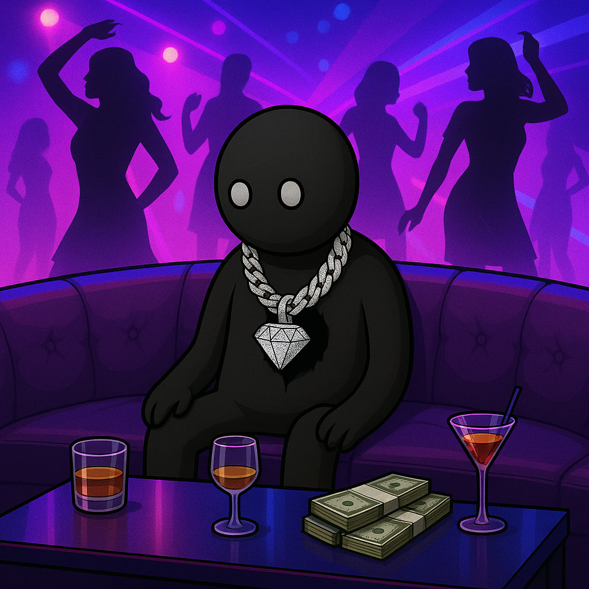
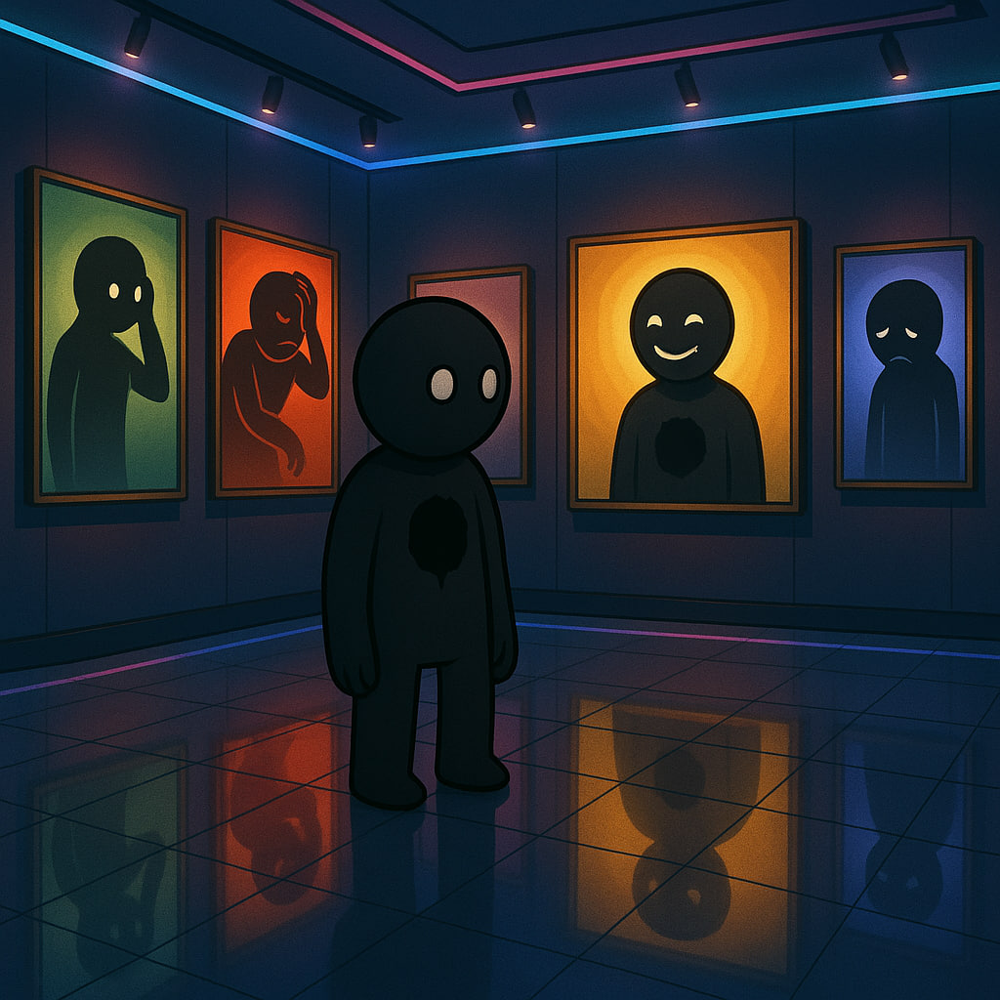
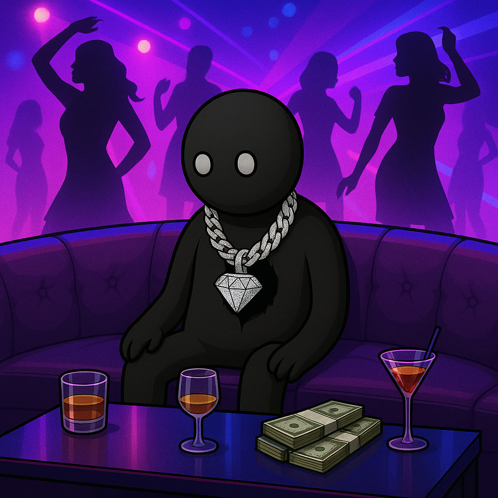
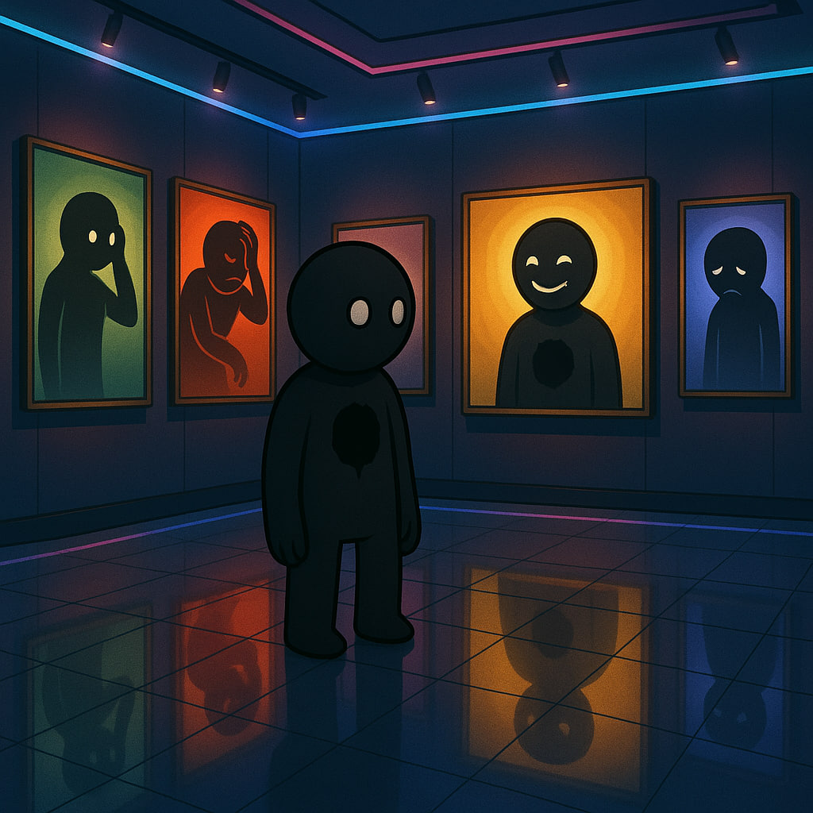

something still stands
HOLLOW
Hollow is a degen who lost all his feelings because of crypto. His chest isn’t just emptiness — it’s the space where everything once lived and then quietly died. He doesn’t look angry. He doesn’t look sad. He just looks done. He exists because everyone in this space knows exactly how he feels.

Who is Hollow?
Hollow is the quiet aftermath of feeling everything for too long. He doesn’t rage. He doesn’t break down. He simply exists in the echo of what used to hurt.
His empty eyes and the void in his chest aren’t symbols of defeat — they are what remains when the world drains you and you keep moving anyway.
A shared feeling
Change your pfp to Hollow if you recognize the same emptiness.
More than a mascot
He isn't here to entertain. He’s a mirror.
For those who stayed
Hollow exists because we’ve all felt like him at some point.
Faces of Hollow
The same emptiness, different moments.

 



The message behind Hollow
This isn’t hype. It’s recognition. A character that looks done, but refuses to disappear. That’s why $HOLLOW exists — to give shape to that feeling and to let people signal it openly.
PFP movement
Use Hollow as your profile picture to say: “I’m still here.”
Community signals
Your posts become part of the collective emptiness we share.
Future utility
More layers will be revealed as the project grows.
Prominent Seets
your signals, your emptiness, your voice
@lostinlosses
“Woke up numb again. Somehow still here.”
@chainwrecked
Every rug takes something. Hollow took the rest.
@habitbreather
Breathing out of habit more than hope.
@emptypockets
He looks how my wallet feels.
@voidwalker
The hole in his chest is where it used to burn.
@sparklessdev
Building without feeling anything left.
@stillstanding
I’ve felt too much. Now I feel nothing.
Create your Hollow PFP
Choose a background, a hat, and an optional extra. Download it and use it as your PFP.
Background
Hat
Extra
Tip: square format works best for profile pictures.
FAQ
What is HOLLOW?
Hollow is a character, a community signal, and a token-layer born from the feeling of being emotionally drained yet still standing.
Is this a token?
Yes. Full launch details, utilities, and contract address will be revealed soon.
Can I use Hollow as my PFP?
Yes. That’s the entire point — signal the feeling.
Where do the Seets come from?
They are messages from the community — real people who understand the feeling Hollow represents.